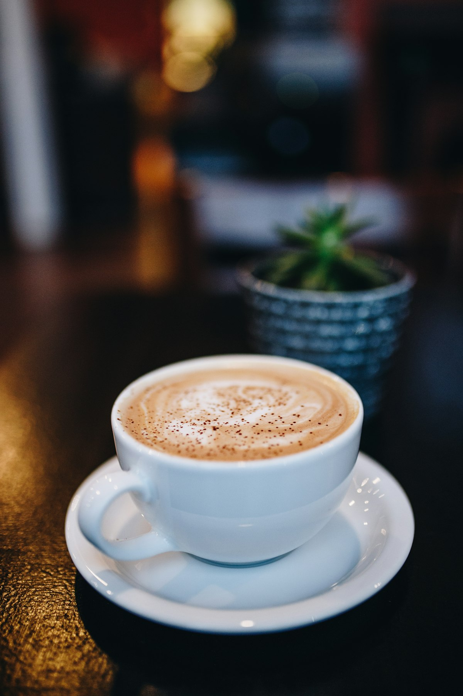

Scratch Syrups
Slow-simmered whole ingredients: Brown Butter Sage, Banana Bread, Puerto Rican Coquito, Smoked Vanilla Bean, and Cardamom Rose.
Explore Syrups →Welcome to Indigo Tea & Coffee Co., Uptown Charlotte’s two-story coffee and tea sanctuary founded by Reba Cox. Located in the historic Fourth Ward, we craft viral house-made syrups, velvety specialty lattes, ceremonial grade Japanese matcha, and organic single-origin loose-leaf teas in a lush botanical community space.

Hand-simmered botanical syrups, ceremonial Japanese green teas, and two levels of community seating.
Slow-simmered whole ingredients: Brown Butter Sage, Banana Bread, Puerto Rican Coquito, Smoked Vanilla Bean, and Cardamom Rose.
Explore Syrups →Whisked fresh from shade-grown first-harvest Japanese tencha leaves, paired with oat or pistachio milk and lavender blossoms.
Matcha & Teas →Two expansive floors of warm brick, lush tropical plants, quiet mezzanine desks, cozy armchairs, and validated Ascher Garage parking.
The Sanctuary →
Whether you need a quiet mezzanine nook for focused laptop work, a sunny window banquette to catch up with friends, or validated parking right in Uptown, Indigo is designed to be your home away from home.
Explore The Space →Visit our Fourth Ward cafe for fresh espresso drinks, ceremonial matcha, artisan sourdough toasts, and validated parking.
Hours, Directions & Parking Validation →